Crazy fun time this week. Went to Mt John Observatory and got a tour of the telescopes there! Seeing the control room and all the graphs and computers set-up made me miss studying, definitely want to go back and do my PhD. Was very cool and the guy showing us round was very knowleable and passionate about the telescopes. Seems like a difficult job as everything is very expensive, and you have to stay up all night to conduct measurements and take photos for other people's research projects. Craziest part was when he moved the dome around, felt like we were moving instead of the roof. Then he moved the telescope and the dome at the same time, and I had to hold the wall because I thought I was going to fall over!
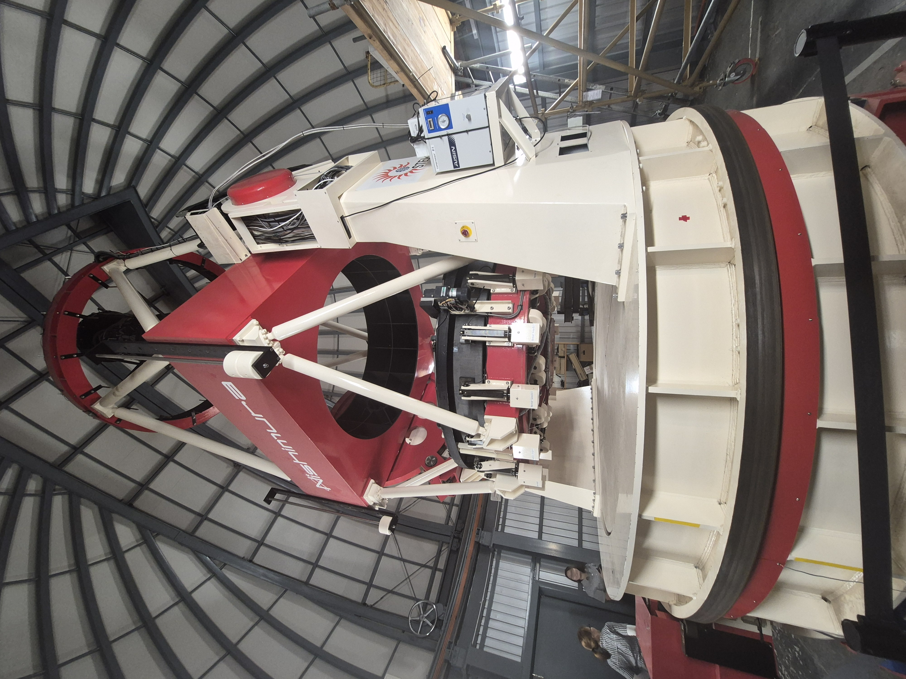
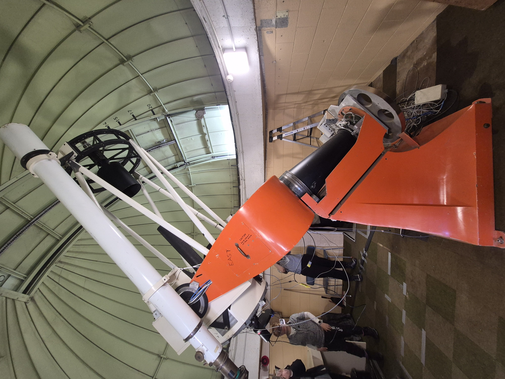
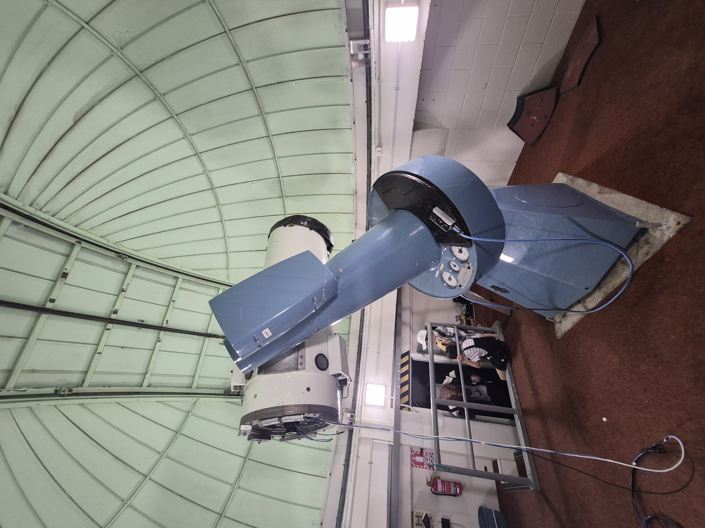
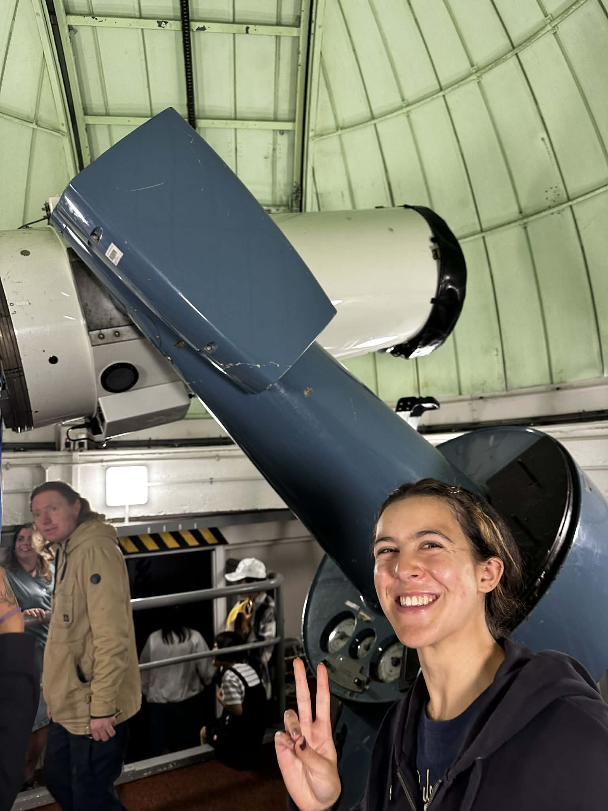
The obsevarotry is on top of Mt John, so gorgeous views all around - and there are a couple of telescopes, all in their own little dome houses, very cute! All the telescopes are different sizes, here is me with a medium size one for comparisson, the red one is the biggest, and that one uses gravitational microlensing to find exoplanets. To save anyone googling, basically when we look at a distant star, and a planet orbiting that star goes in front, the light around the star is seen differently - due to the gravity of the planet. This makes the star appear brighter, and shows up as a distinct shape on the graph - when this is detected the Mt John people let other telescopes around the world know that an event is occuring and to point their telescopes at that point in the sky to record the event. This telescope has a very big computer, which now could be replaced with a phone, but becuase the Telescope is shared between the university of Cantebury and a university in Japan, it is diffuclt to change the systems together.
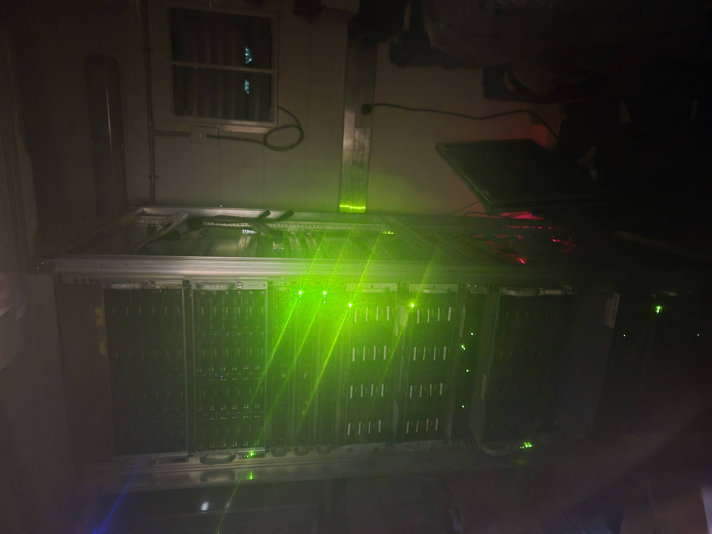
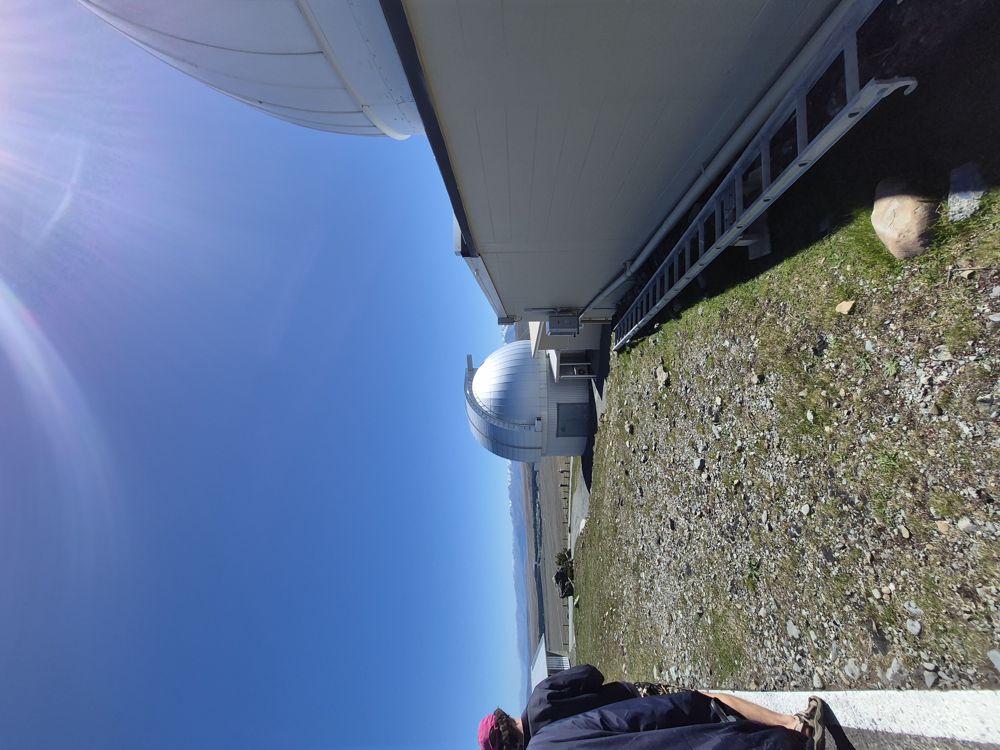
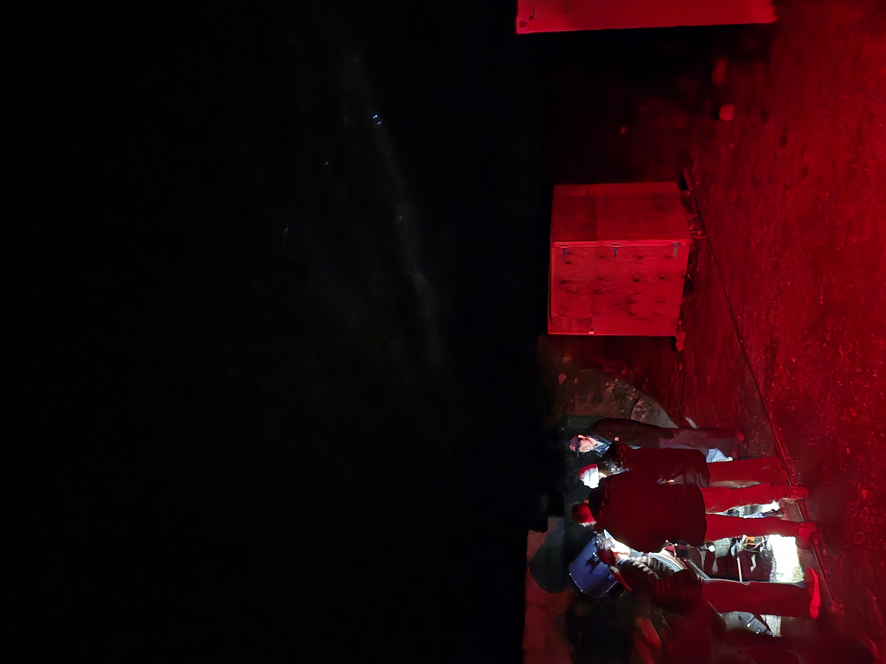
Some more very pretty sunsets, and here is a picture of us around the telescope at work. We have to use red lights becuase white light affects your night vision and means you can see less stars. In fact people in the past could see way more stars because they lived with less artificial light.
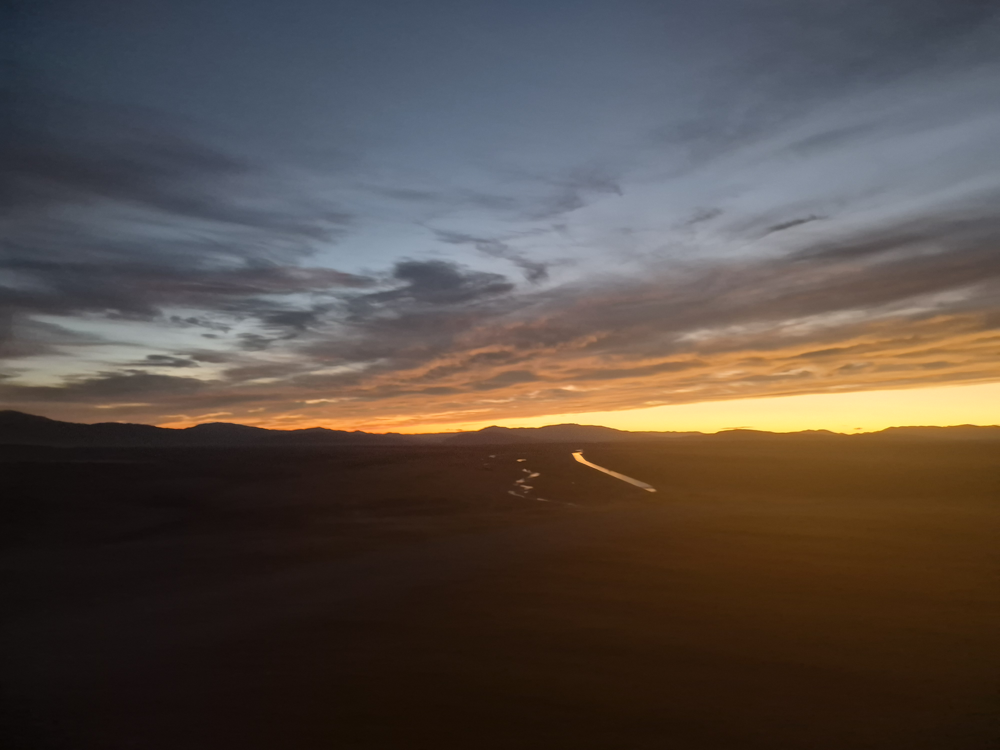
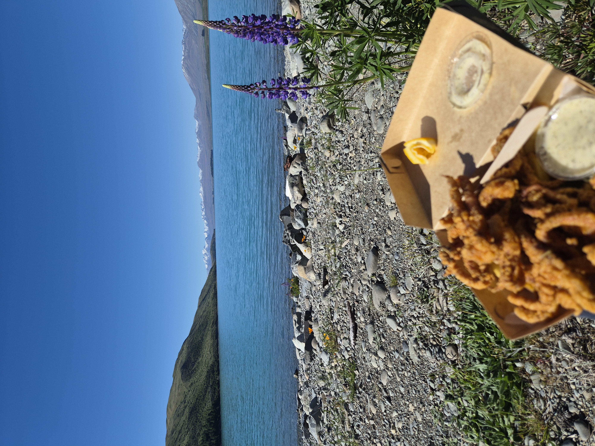
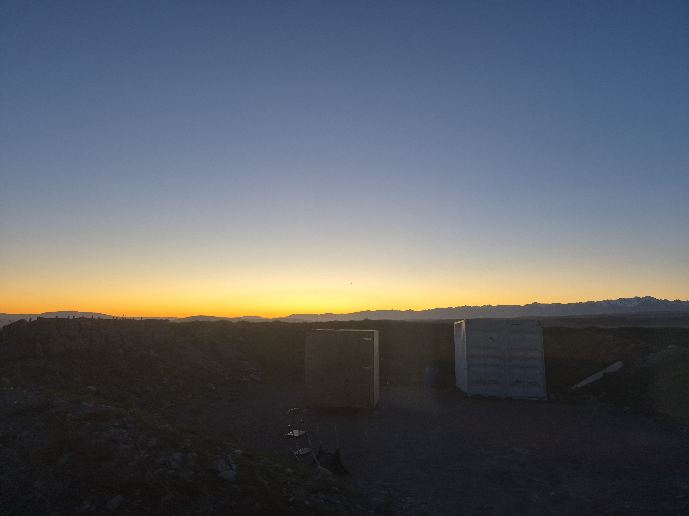
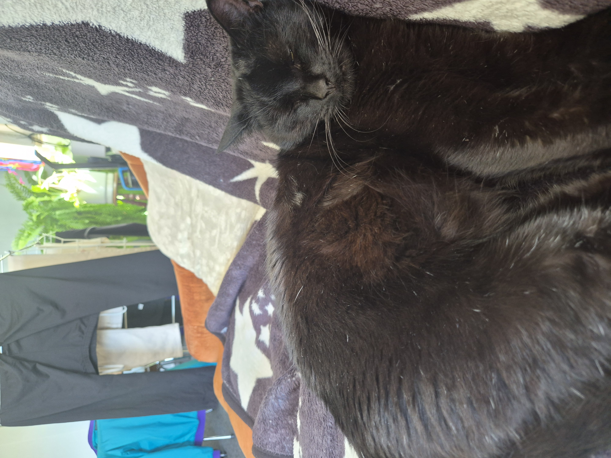
Have moved to a flat with a cat! Had some fish and chips by the lake and here are some more dusk photos.